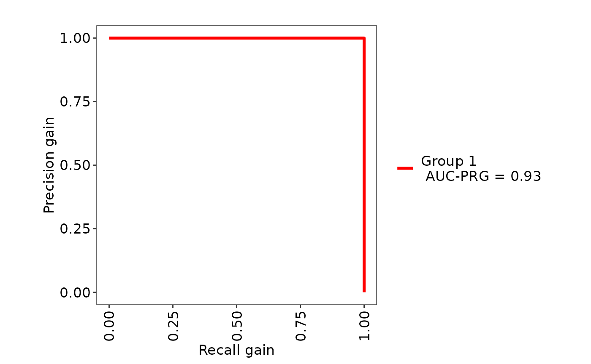
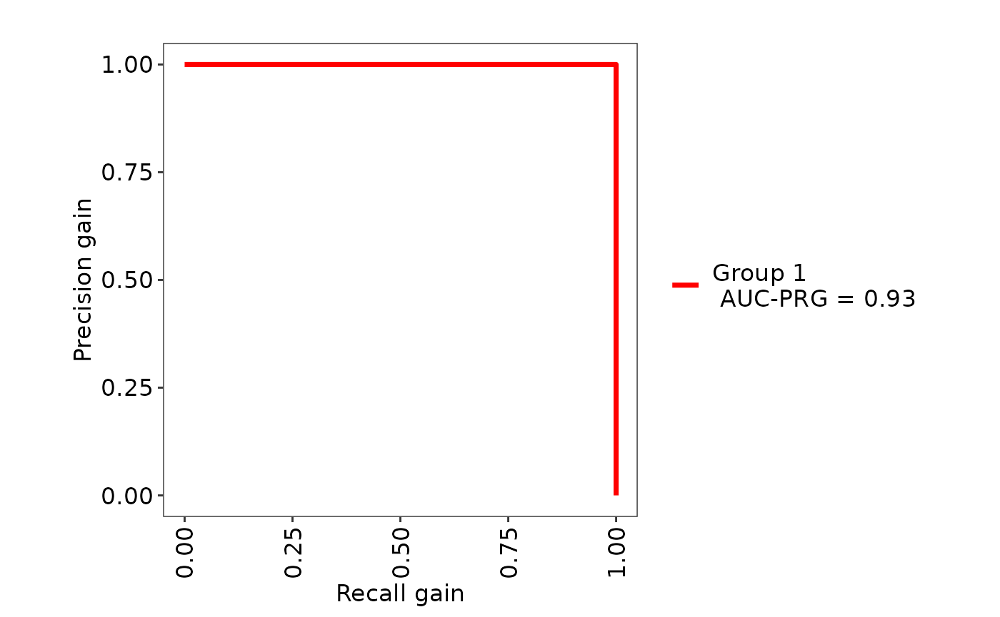
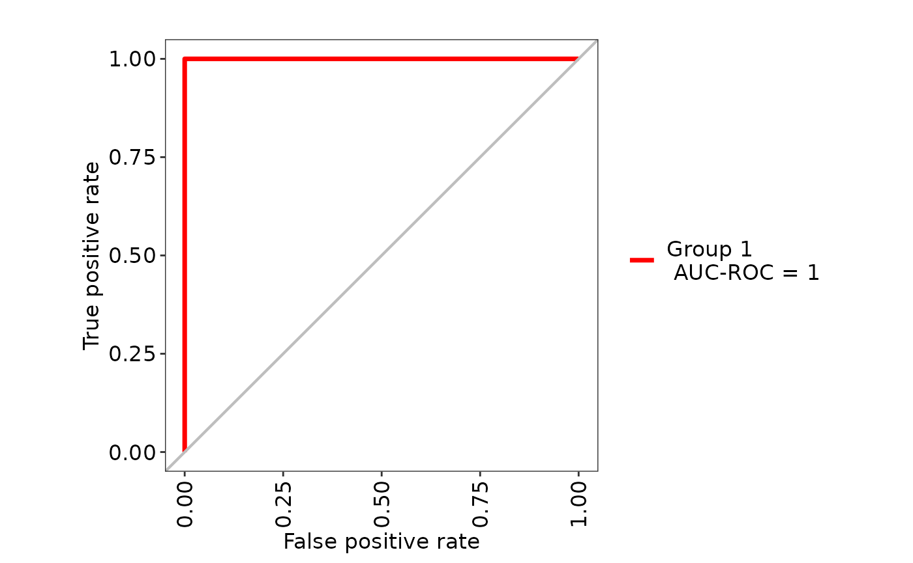

(m,n)-mer - A Simple and New Statistical Feature for viral Classification
Amanda Araújo Serrão de Andrade
National Laboratory for Scientific Computing, Bioinformatics Laboratory (LABINFO), Petrópolis, Rio de Janeiro, BrazilMarco Grivet
Pontifícia Universidade Católica do Rio de Janeiro, 22451-900, BrazilOtávio Brustolini
National Laboratory for Scientific Computing, Bioinformatics Laboratory (LABINFO), Petrópolis, Rio de Janeiro, BrazilAna Tereza Ribeiro de Vasconcelos
National Laboratory for Scientific Computing, Bioinformatics Laboratory (LABINFO), Petrópolis, Rio de Janeiro, Brazilvignette.RmdAbstract
The (m,n)-mer is a new statistical feature based upon conditional frequencies (conditional probability density distributions). Here, we present the mnmer function and show a pratical example of classification using mnmer output.
The (m,n)-mer R package was created to summarize biological data into numerical characteristics, as an alternative for k-mers. It reads a FASTA file and generates a table describing the conditional frequency distribution of the selected (m,n)-mer in the sequences. The feature matrix for classification is created by combining its output with class information.
Since letters are a bit awkward from a mathematical viewpoint, lets univocally associate the digits \(0\), \(1\), \(2\) and \(3\) to letters A, C, G and T. Any order will do. Hence, each k-mer can be described by a unique base-4 integer number in the range from \(0\) to \(4.k-1\). As an example, consider the 6-mer ACCTGA and the association described above. Then the 6-mer ACCTGA can be represented as the base-4 number \(011320\), which corresponds to the number \(376\) in the decimal notation.
If we order all the k-mers according to these numbers, we say the k-mers are “lexicographically” ordered and we can use the notation \(s_{k}^{i}\) to identify the k-mer associated to the decimal number \(i\) ranging from \(0\) to \(4.k-1\). Following the above example, we can say that \(s^{376}_{6}=ACCTGA\).
Let’s now consider a particular genome extracted from a particular organism and assume that we count the occurrence of all distinct k-mers present in this genome. We will denote by \(c_{k}^{i}\) the count corresponding to the i-th k-mer. Then we can create a real vector of size \(4.k\) as illustrated in the Figure 1 below:
Since this counting is generally made for several organisms with different sizes, for the sake of comparison it is more convenient express this count in relative terms. Similarly, we will denote by as \(f_{k}^{i}\) the relative frequency of k-mer \(s_{k}^{i}\) which is computed as the division \(f_{k}^{i}=\frac{c_{k}^{i}}{N_{k}}\) where \({N_{k}}\) is the total number of k-mers counted in this organism, that is, \({N_{k}}=\sum_{i=0}^{4^{k}-1}c_{k}^{i}\).
Let’s define a vector \(\underline{f}_{k}=(f_{k}^{0},f_{k}^{1},...,f_{k}^{4^{k}-1})\) as the formal descriptor of the particular organism as far as k-mer is concerned.
Please notice that each element of vector \(\underline{f}_{k}\) is nonnegative and their sum is 1, which allow us to interpret this vector as a “probability density distribution” according to statistical parlance.
In the above example, consider the 6-mer ACCTGA and m and n respectively assuming the values 4 and 2. Hence we have \(S_{6}=ACCTGA\) , \(S_{4}^{-}=ACCT\) and \(S_{2}^{+}=GA\) . Although we have used the superscripts – and + to respectively indicate the left and right part of the k-mer \(S_{k}\), they are also an m-mer and an n-mer on its own. We propose the replacement of the unconditional frequency \(f_{k}^{i}\) by the conditional frequency \(f_{m,n}^{i}\) which represents the relative frequency of the n-mer \(S_{n}^{+}\) conditioned to the fact that the set of m bases that precedes it is \(S_{m}^{-}\). The vector so defined will be conveniently renamed \(\underline{f}_{m,n}\) in order to be more explicit. By defining \(u/v\) as the result of the integer division of \(u\) by \(v\) then, based upon the classical result of conditional probabilities, we have \(\underline{f}_{m,n}=(f_{m,n}^{0},f_{m,n}^{1},...,f_{m,n}^{4^{k}-1})\) where \(f_{m,n}^{i}=\frac{f_{k}^{i]}}{f_{m}^{i/4^n}}\).
Again in our example, \(f_{6}^{376}\), the relative frequency of 6-mer ACCTGA must be divided by \(f_{4}^{23}\), which is the relative frequency of \(S_{4}^{23}=ACCT\) .
It can be easily seen that the sum all elements of this new vector is no longer 1 but \(4m\), because it is the concatenation of \(4m\) conditional frequency distributions associated to each one of the possible m-mers. This fact has no impact whatsoever in our current discussion but, in order to keep it as a probability density distribution as well, we normalize it by dividing it by \(4m\). Figure 2 shows an comparison of k-mers and (m,n)-mers obtained from the same nucleotide sequence.
According to Figure 3 below, the k-mers are represented as (0,k) and the (m,n)-mers as (m,n).
The output table (Figure 4) includes the fasta file accession numbers as an ID column, the relative frequency of mn-mers up to \(4.k\) columns, and class information.
For more details and performance comparison, please see Andrade et al., 2022 (in press).
The R package was created to summarize biological data into numerical characteristics. It accepts a FASTA file and generates a dataframe that describes the frequency of all (m,n)-mers identified in the input sequences. This output is coupled with class information to create a feature matrix.
The package needs 4.0.0 or later, Biostrings and Utils.
The user should install the package from the GitHub repository. It can be done by using the package.
The main function of this package is the mnmer function.
It creates dataframes with the conditional probability. By invoking the
function cmmer from the C++ script, this function can
create both k-mers and (m,n)-mers.
The parameters receives:
file = file = FASTA file. It could be a multiFASTA. This
file can be .gz compressed or not.
k = Value of k for k-mer generation. Needs to be
different from zero.
m = Value of m for (m,n)-mer generation in the format of
(m, k-m). In case of k-mer generation, m should be zero as (0,k).
As default, all sequences with high content of N + IUPAC bases will be removed from further analysis given the little informative nature of those bases. In that case, the mnmer function prints the following warning:
## [1] "Warning: Sequence has a proportion of N + IUPAC bases = 10%"The mnmer function generates a independent feature matrix that may be used to conduct clustering or classification.
Assume we need to distinguish between viruses that only replicate in mosquito and viruses that only replicate in plants. The corresponding FASTA files can be found in the extdata folder.
After package installation, the user should run:
library("mnmer")## Loading required package: Biostrings## Loading required package: BiocGenerics##
## Attaching package: 'BiocGenerics'## The following objects are masked from 'package:stats':
##
## IQR, mad, sd, var, xtabs## The following objects are masked from 'package:base':
##
## anyDuplicated, aperm, append, as.data.frame, basename, cbind,
## colnames, dirname, do.call, duplicated, eval, evalq, Filter, Find,
## get, grep, grepl, intersect, is.unsorted, lapply, Map, mapply,
## match, mget, order, paste, pmax, pmax.int, pmin, pmin.int,
## Position, rank, rbind, Reduce, rownames, sapply, setdiff, sort,
## table, tapply, union, unique, unsplit, which.max, which.min## Loading required package: S4Vectors## Loading required package: stats4##
## Attaching package: 'S4Vectors'## The following objects are masked from 'package:base':
##
## expand.grid, I, unname## Loading required package: IRanges## Loading required package: XVector## Loading required package: GenomeInfoDb##
## Attaching package: 'Biostrings'## The following object is masked from 'package:base':
##
## strsplit
dir <-system.file("extdata", package="mnmer")For k-mer generation, the parameter k is set to choice, while the parameter m is set to zero. Given that the k-mers have been conditioned to zero bases.
mosquito <- mnmer(file.path(dir, "mosquito_vir.fasta.gz"),2,0)
plant <- mnmer(file.path(dir, "plant_vir.fasta.gz"),2,0)The user specifies the k and m parameters for (mn)-mer generation.
For example, k = 2 and m = 1 produce the (1,1)-mer, in which one base is conditioned on the frequency of the base before it. Bases other than A, C, T, and G were disregarded.
mosquito <- mnmer(file.path(dir, "mosquito_vir.fasta.gz"),2,1)
plant <- mnmer(file.path(dir, "plant_vir.fasta.gz"),2,1)Here, we utilize the (1,1)-mer feature matrices generated by the mnmer to run an classification using Caret and MLeval.
Caret (https://topepo.github.io/caret/) is a library of functions for building predictive models from R systems. We utilized the createDataPartition, trainControl, and train functions in this example. The createDataPartition method splits the feature matrix and creates the train and test datasets. The trainControl function generates parameters that further regulate how the train function creates models.
MLeval (https://cran.r-project.org/web/packages/MLeval/index.html) is used to plot performance metrics.
To execute the example, enter the following code:
## Loading required package: ggplot2## Loading required package: lattice
# Add class information
classes <- replicate(nrow(mosquito), "mosquito.vir")
featureMatrix_mosquito <- cbind(mosquito,classes)
classes <- replicate(nrow(plant), "plant.vir")
featureMatrix_plant <- cbind(plant,classes)
featureMatrix <- rbind(featureMatrix_mosquito, featureMatrix_plant)
featureMatrix <- subset(featureMatrix, select = -c(seqid))
# Machine Learning
train_index <- caret::createDataPartition(featureMatrix$classes, p=0.8, list=FALSE)
train <- featureMatrix[train_index, ]
test <- featureMatrix[-train_index, ]
control <- caret::trainControl(method="cv",
summaryFunction=twoClassSummary,
classProbs=TRUE,
savePredictions = TRUE)
roc <- caret::train(classes ~ .,
data=train,
method="rf",
preProc=c("center"),
trControl=control)## Warning in train.default(x, y, weights = w, ...): The metric "Accuracy" was not
## in the result set. ROC will be used instead.
res <- MLeval::evalm(roc) # Make the ROC plot## ***MLeval: Machine Learning Model Evaluation***## Input: caret train function object## Not averaging probs.## Group 1 type: cv## Observations: 40## Number of groups: 1## Observations per group: 40## Positive: plant.vir## Negative: mosquito.vir## Group: Group 1## Positive: 20## Negative: 20## ***Performance Metrics***
 

## Group 1 Optimal Informedness = 0.95## Group 1 AUC-ROC = 1
## R version 4.2.2 (2022-10-31)
## Platform: x86_64-pc-linux-gnu (64-bit)
## Running under: Ubuntu 22.04.1 LTS
##
## Matrix products: default
## BLAS: /usr/lib/x86_64-linux-gnu/openblas-pthread/libblas.so.3
## LAPACK: /usr/lib/x86_64-linux-gnu/openblas-pthread/libopenblasp-r0.3.20.so
##
## locale:
## [1] LC_CTYPE=C.UTF-8 LC_NUMERIC=C LC_TIME=C.UTF-8
## [4] LC_COLLATE=C.UTF-8 LC_MONETARY=C.UTF-8 LC_MESSAGES=C.UTF-8
## [7] LC_PAPER=C.UTF-8 LC_NAME=C LC_ADDRESS=C
## [10] LC_TELEPHONE=C LC_MEASUREMENT=C.UTF-8 LC_IDENTIFICATION=C
##
## attached base packages:
## [1] stats4 stats graphics grDevices utils datasets methods
## [8] base
##
## other attached packages:
## [1] caret_6.0-93 lattice_0.20-45 ggplot2_3.4.0
## [4] mnmer_0.99.1 Biostrings_2.66.0 GenomeInfoDb_1.34.9
## [7] XVector_0.38.0 IRanges_2.32.0 S4Vectors_0.36.1
## [10] BiocGenerics_0.44.0 BiocStyle_2.26.0
##
## loaded via a namespace (and not attached):
## [1] MLeval_0.3 nlme_3.1-160 bitops_1.0-7
## [4] fs_1.6.1 lubridate_1.9.1 rprojroot_2.0.3
## [7] tools_4.2.2 bslib_0.4.2 utf8_1.2.3
## [10] R6_2.5.1 rpart_4.1.19 colorspace_2.1-0
## [13] nnet_7.3-18 withr_2.5.0 tidyselect_1.2.0
## [16] compiler_4.2.2 textshaping_0.3.6 cli_3.6.0
## [19] desc_1.4.2 labeling_0.4.2 bookdown_0.32
## [22] sass_0.4.5 scales_1.2.1 randomForest_4.7-1.1
## [25] pkgdown_2.0.7 systemfonts_1.0.4 stringr_1.5.0
## [28] digest_0.6.31 rmarkdown_2.20 pkgconfig_2.0.3
## [31] htmltools_0.5.4 parallelly_1.34.0 highr_0.10
## [34] fastmap_1.1.0 rlang_1.0.6 farver_2.1.1
## [37] jquerylib_0.1.4 generics_0.1.3 jsonlite_1.8.4
## [40] ModelMetrics_1.2.2.2 dplyr_1.1.0 RCurl_1.98-1.10
## [43] magrittr_2.0.3 GenomeInfoDbData_1.2.9 Matrix_1.5-1
## [46] Rcpp_1.0.10 munsell_0.5.0 fansi_1.0.4
## [49] lifecycle_1.0.3 pROC_1.18.0 stringi_1.7.12
## [52] yaml_2.3.7 MASS_7.3-58.1 zlibbioc_1.44.0
## [55] plyr_1.8.8 recipes_1.0.4 grid_4.2.2
## [58] parallel_4.2.2 listenv_0.9.0 crayon_1.5.2
## [61] splines_4.2.2 knitr_1.42 pillar_1.8.1
## [64] future.apply_1.10.0 reshape2_1.4.4 codetools_0.2-18
## [67] glue_1.6.2 evaluate_0.20 data.table_1.14.6
## [70] BiocManager_1.30.19 vctrs_0.5.2 foreach_1.5.2
## [73] gtable_0.3.1 purrr_1.0.1 future_1.31.0
## [76] cachem_1.0.6 xfun_0.37 gower_1.0.1
## [79] prodlim_2019.11.13 ragg_1.2.5 class_7.3-20
## [82] survival_3.4-0 timeDate_4022.108 tibble_3.1.8
## [85] iterators_1.0.14 memoise_2.0.1 hardhat_1.2.0
## [88] lava_1.7.1 timechange_0.2.0 globals_0.16.2
## [91] ipred_0.9-13